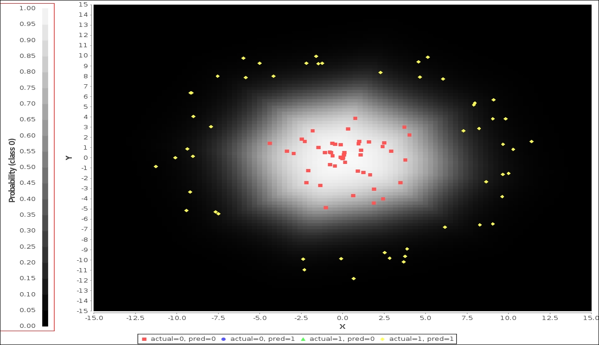

Deeplearning4j primarily works on networks having multiple layers. To get started working with Deeplearning4j, one needs to get accustomed with the prerequisites, and how to install all the dependent software. Most of the documentation can be easily found on the official website of Deeplearning4j at https://deeplearning4j.org/ [88].
In this section of the chapter, we will help you to get familiar with the code of Deeplearning4j. Initially, we will show the implementation of a simple operation of a multilayer neural network with Deeplearning4j. The later part of the section will discuss distributed deep learning with Deeplearning4j library. Deeplearning4j trains distributed deep neural network on multiple distributed GPUs using Apache Spark. The later part of this section will also introduce the setup of Apache Spark for Deeplearning4j.
This part will mainly introduce the 'Hello World' programs of deep learning with deeplearning4j. We will explain the basic functions of the library with the help of two simple deep learning problems.
In Deeplearning4j, MultiLayerConfiguration, a class of the library can be considered as the base of the building block, which is responsible for organizing the layers and the corresponding hyperparameters of a neural network. This class can be considered as the core building block of Deeplearning4j for neural networks. Throughout the book, we will use this class to configure different multilayer neural networks.
In the first example, we will show how to classify data patterns for the multilayer perceptron classifier with the help of Deeplearning4j.
The following is the sample training dataset that will be used in this program:
0, -0.500568579838, 0.687106471955
1, 0.190067977988, -0.341116711905
0, 0.995019651532, 0.663292952846
0, -1.03053733564, 0.342392729177
1, 0.0376749555484,-0.836548188848
0, -0.113745482508, 0.740204108847
1, 0.56769119889, -0.375810486522
Initially, we need to initialize the various hyperparameters of the networks. The following piece of code will set the ND4J environment for the program:
Nd4j.ENFORCE_NUMERICAL_STABILITY = true;
int batchSize = 50;
int seed = 123;
double learningRate = 0.005;
Number of epochs is set to 30:
int nEpochs = 30;
int numInputs = 2;
int numOutputs = 2;
int numHiddenNodes = 20;
The following piece of code will load the training data to the network:
RecordReader rr = new CSVRecordReader();
rr.initialize(new FileSplit(new File("saturn_data_train.csv")));
DataSetIterator trainIter = new RecordReaderDataSetIterator
(rr,batchSize,0,2);
As the training data is loaded next we load the test data into the model with the following code:
RecordReader rrTest = new CSVRecordReader();
rrTest.initialize(new FileSplit(new File("saturn_data_eval.csv")));
DataSetIterator trainIter = new RecordReaderDataSetIterator
(rrTest,batchSize,0,2);
Organization of all the layers of the network model as well as setting up the hyperparameters can be done with the following piece of code:
MultiLayerConfiguration conf = new NeuralNetConfiguration.Builder()
.seed(seed)
.iterations(1)
.optimizationAlgo(OptimizationAlgorithm.STOCHASTIC_GRADIENT_DESCENT)
.learningRate(learningRate)
.updater(Updater.NESTEROVS).momentum(0.9)
.list()
.layer(0, new DenseLayer.Builder().nIn(numInputs).nOut(numHiddenNodes)
.weightInit(WeightInit.XAVIER)
.activation("relu")
.build())
.layer(1, new OutputLayer.Builder(LossFunction.NEGATIVELOGLIKELIHOOD)
.weightInit(WeightInit.XAVIER)
.activation("softmax")
.nIn(numHiddenNodes).nOut(numOutputs).build())
.pretrain(false)
.backprop(true)
.build();
Now, we have loaded the training and test dataset, the initialization of the model can be done by calling the init() method. This will also start the training of the model from the given inputs:
MultiLayerNetwork model = new MultiLayerNetwork(conf); model.init();
To check the output after a certain internal, let's print the scores every 5 parameter updates:
model.setListeners(new ScoreIterationListener(5));
for ( int n = 0; n < nEpochs; n++)
{
Finally, the network is trained by calling the .fit() method:
model.fit( trainIter ); } System.out.println("Evaluating the model...."); Evaluation eval = new Evaluation(numOutputs); while(testIter.hasNext()) { DataSet t = testIter.next(); INDArray features = t.getFeatureMatrix(); INDArray lables = t.getLabels(); INDArray predicted = model.output(features,false); eval.eval(lables, predicted); } System.out.println(eval.stats());
So the training of the model is done. In the next part, the data points will be plotted and the corresponding accuracy of the data will be calculated as shown in the following code:
double xMin = -15;
double xMax = 15;
double yMin = -15;
double yMax = 15;
int nPointsPerAxis = 100;
double[][] evalPoints = new double[nPointsPerAxis*nPointsPerAxis][2];
int count = 0;
for( int i=0; i<nPointsPerAxis; i++ )
{
for( int j=0; j<nPointsPerAxis; j++ )
{
double x = i * (xMax-xMin)/(nPointsPerAxis-1) + xMin;
double y = j * (yMax-yMin)/(nPointsPerAxis-1) + yMin;
evalPoints[count][0] = x;
evalPoints[count][1] = y;
count++;
}
}
INDArray allXYPoints = Nd4j.create(evalPoints);
INDArray predictionsAtXYPoints = model.output(allXYPoints);
The following code will store all the training data in an array before plotting those in the graph:
rr.initialize(new FileSplit(new File("saturn_data_train.csv")));
rr.reset();
int nTrainPoints = 500;
trainIter = new RecordReaderDataSetIterator(rr,nTrainPoints,0,2);
DataSet ds = trainIter.next();
PlotUtil.plotTrainingData(ds.getFeatures(), ds.getLabels(),allXYPoints, predictionsAtXYPoints, nPointsPerAxis);
Running the test data through the network and generating the prediction can be done with the following code:
rrTest.initialize(new FileSplit(new File("saturn_data_eval.csv")));
rrTest.reset();
int nTestPoints = 100;
testIter = new RecordReaderDataSetIterator(rrTest,nTestPoints,0,2);
ds = testIter.next();
INDArray testPredicted = model.output(ds.getFeatures());
PlotUtil.plotTestData(ds.getFeatures(), ds.getLabels(), testPredicted, allXYPoints, predictionsAtXYPoints, nPointsPerAxis);
When the preceding code is executed, it will run for approximately 5-10 seconds, depending upon your system configuration. During that time, you can check the console, which will display the updated score of training for your model.
A piece of evaluation is displayed as follows:
o.d.o.l.ScoreIterationListener - Score at iteration 0 is
0.6313823699951172
o.d.o.l.ScoreIterationListener - Score at iteration 5 is
0.6154170989990234
o.d.o.l.ScoreIterationListener - Score at iteration 10 is
0.4763660430908203
o.d.o.l.ScoreIterationListener - Score at iteration 15 is
0.52469970703125
o.d.o.l.ScoreIterationListener - Score at iteration 20 is
0.4296367645263672
o.d.o.l.ScoreIterationListener - Score at iteration 25 is
0.4755714416503906
o.d.o.l.ScoreIterationListener - Score at iteration 30 is
0.3985047912597656
o.d.o.l.ScoreIterationListener - Score at iteration 35 is
0.4304619598388672
o.d.o.l.ScoreIterationListener - Score at iteration 40 is
0.3672477722167969
o.d.o.l.ScoreIterationListener - Score at iteration 45 is
0.39150180816650393
o.d.o.l.ScoreIterationListener - Score at iteration 50 is
0.3353725051879883
o.d.o.l.ScoreIterationListener - Score at iteration 55 is
0.3596681213378906
Finally, the program will output the different statistics of the training for the model using Deeplearning4j as follows:
Evaluating the model.... Examples labeled as 0 classified by model as 0: 48 times Examples labeled as 1 classified by model as 1: 52 times
In the background, we can visualize the plotting of the data, which will give an impression of what the planet Saturn looks like. In the next part, we will show how to integrate Hadoop YARN and Spark with Deeplearning4j. The following Figure 2.8 shows the output of the program in graphical representation:

Figure 2.8: The scattered data points are plotted when the preceding program is executed. The data points give an impression of the planet Saturn
To use Deeplearning4j on Hadoop, we need to include the deeplearning-hadoop dependency as shown in the following code:
<!-- https://mvnrepository.com/artifact/org.Deeplearning4j/Deeplearning4j-hadoop -->
<dependency>
<groupId>org.Deeplearning4j</groupId>
<artifactId>Deeplearning4j-hadoop</artifactId>
<version>0.0.3.2.7</version>
</dependency>
Similarly, for Spark, we have to include the deeplearning-spark dependency as shown in the following code:
<!-- https://mvnrepository.com/artifact/org.Deeplearning4j/dl4j-spark-nlp_2.11 -->
<dependency>
<groupId>org.Deeplearning4j</groupId>
<artifactId>dl4j-spark-nlp_2.11</artifactId>
<version>0.5.0</version>
</dependency>
Explaining the detailed functionalities of Apache Spark is beyond the scope of this book. Interested readers can catch up on the same at http://spark.apache.org/ .
As already stated in the previous section, Apache Hadoop YARN is a cluster resource manager. When Deeplearning4j submits a training job to a YARN cluster via Spark, it is the responsibility of YARN to manage the allocation of resources such as CPU cores, amount of memory consumed by each executor, and so on. However, to extract the best performance from Deeplearning4j on YARN, some careful memory configuration is desired. This is done as follows:
spark.executor.memory.spark.yarn.executor.memoryOverhead.spark.executor.memory and spark.yarn.executor.memoryOverhead must always be less than the amount of memory allocated to a container by the YARN.org.bytedeco.javacpp.maxbytes system property.org.bytedeco.javacpp.maxbytes must be less than spark.yarn.executor.memoryOverhead.The current version of Deeplearning4j uses parameter averaging to perform distributed training of the neural network. The following operation is performed exactly the way it is described in the parameter averaging part of the earlier section:
SparkDl4jMultiLayer sparkNet = new SparkDl4jMultiLayer(sc,conf,
new ParameterAveragingTrainingMaster
.Builder(numExecutors(),dataSetObjSize
.batchSizePerWorker(batchSizePerExecutor)
.averagingFrequency(1)
.repartionData(Repartition.Always)
.build());
sparkNet.setCollectTrainingStats(true);
To list all the files from HDFS so as to run the code on different nodes, run the following code:
Configuration config = new Configuration();
FileSystem hdfs = FileSystem.get(tempDir.toUri(), config);
RemoteIterator<LocatedFileStatus> fileIter = hdfs.listFiles
(new org.apache.hadoop.fs.Path(tempDir.toString()),false);
List<String> paths = new ArrayList<>();
while(fileIter.hasNext())
{
String path = fileIter.next().getPath().toString();
paths.add(path);
}
A complete code for how to set up Spark with YARN and HDFS will be provided along with the code bundle. For simplicity, only part of the code is shown here for the purpose of understanding.
Now, we will show an example to demonstrate how to use Spark and load the data into memory with Deeplearning4j. We will use a basic DataVec example to show some pre-processing operation on some CSV data.
The sample dataset will look as like the following:
2016-01-01 17:00:00.000,830a7u3,u323fy8902,1,USA,100.00,Legit
2016-01-01 18:03:01.256,830a7u3,9732498oeu,3,FR,73.20,Legit
2016-01-03 02:53:32.231,78ueoau32,w234e989,1,USA,1621.00,Fraud
2016-01-03 09:30:16.832,t842uocd,9732498oeu,4,USA,43.19,Legit
2016-01-04 23:01:52.920,t842uocd,cza8873bm,10,MX,159.65,Legit
2016-01-05 02:28:10.648,t842uocd,fgcq9803,6,CAN,26.33,Fraud
2016-01-05 10:15:36.483,rgc707ke3,tn342v7,2,USA,-0.90,Legit
The problem statement of the program is as follows:
USA and MX for the MerchantCountryCode columnTransactionAmountUSD columnHourOfDay columnSchema inputDataSchema = new Schema.Builder()
.addColumnString("DateTimeString")
.addColumnsString("CustomerID", "MerchantID")
.addColumnInteger("NumItemsInTransaction")
.addColumnCategorical("MerchantCountryCode",
Arrays.asList("USA","CAN","FR","MX"))
.addColumnDouble("TransactionAmountUSD",0.0,null,false,false)
.addColumnCategorical("FraudLabel",Arrays.asList("Fraud","Legit"))
.build();
System.out.println("\n\nOther information obtainable from schema:");
System.out.println("Number of columns: " +
inputDataSchema.numColumns());
System.out.println("Column names: " +
inputDataSchema.getColumnNames());
System.out.println("Column types: " +
inputDataSchema.getColumnTypes());
The following part will define the operations that we want to perform on the dataset:
TransformProcess tp = new TransformProcess.Builder(inputDataSchema)
.removeColumns("CustomerID","MerchantID")
.filter(new ConditionFilter(
new CategoricalColumnCondition("MerchantCountryCode",
ConditionOp.NotInSet, new HashSet<>(Arrays.asList("USA","MX")))))
In unstructured data, the datasets are generally noisy, and so we need to take care of some of the invalid data. In case of negative dollar value, the program will replace those to 0.0. We will keep the positive dollar amounts intact.
.conditionalReplaceValueTransform(
"TransactionAmountUSD",
new DoubleWritable(0.0),
new DoubleColumnCondition("TransactionAmountUSD",ConditionOp.LessThan
, 0.0))
Now, to format the DateTime format as per the problem statement, the following piece of code is used:
.stringToTimeTransform("DateTimeString","YYYY-MM-DD HH:mm:ss.SSS",
DateTimeZone.UTC)
.renameColumn("DateTimeString", "DateTime")
.transform(new DeriveColumnsFromTimeTransform.Builder("DateTime")
.addIntegerDerivedColumn("HourOfDay", DateTimeFieldType.hourOfDay())
.build())
.removeColumns("DateTime")
.build();
A different schema is created after execution of the all these operations as follows:
Schema outputSchema = tp.getFinalSchema();
System.out.println("\nSchema after transforming data:");
System.out.println(outputSchema);
The following piece of code will set Spark to perform all the operations:
SparkConf conf = new SparkConf();
conf.setMaster("local[*]");
conf.setAppName("DataVec Example");
JavaSparkContext sc = new JavaSparkContext(conf);
String directory = new ClassPathResource("exampledata.csv").getFile()
.getParent();
To take the data directly from HDFS, one has to pass hdfs://{the filepath name}:
JavaRDD<String> stringData = sc.textFile(directory);
The input data are parsed using CSVRecordReader() method as follows:
RecordReader rr = new CSVRecordReader();
JavaRDD<List<Writable>> parsedInputData = stringData.map(new StringToWritablesFunction(rr));
The pre-defined transformation of Spark is performed as follows:
SparkTransformExecutor exec = new SparkTransformExecutor();
JavaRDD<List<Writable>> processedData = exec.execute(parsedInputData,
tp);
JavaRDD<String> processedAsString = processedData.map(new
WritablesToStringFunction(","));
As mentioned, to save the data back to HDFS, just putting the file path after hdfs:// will do:
processedAsString.saveAsTextFile("hdfs://your/hdfs/save/path/here") List<String> processedCollected = processedAsString.collect(); List<String> inputDataCollected = stringData.collect(); System.out.println("\n ---- Original Data ----"); for(String s : inputDataCollected) System.out.println(s); System.out.println("\n ---- Processed Data ----"); for(String s : processedCollected) System.out.println(s);
When the program is executed with Spark using Deeplearning4j, we will get the following output:
14:20:12 INFO MemoryStore: Block broadcast_0 stored as values in memory (estimated size 104.0 KB, free 1390.9 MB)
16/08/27 14:20:12 INFO MemoryStore: ensureFreeSpace(10065) called with curMem=106480, maxMem=1458611159
16/08/27 14:20:12 INFO MemoryStore: Block broadcast_0_piece0 stored as bytes in memory (estimated size 9.8 KB, free 1390.9 MB)
16/08/27 14:20:12 INFO BlockManagerInfo: Added broadcast_0_piece0 in memory on localhost:46336 (size: 9.8 KB, free: 1391.0 MB)
16/08/27 14:20:12 INFO SparkContext: Created broadcast 0 from textFile at BasicDataVecExample.java:144
16/08/27 14:20:13 INFO SparkTransformExecutor: Starting execution of stage 1 of 7
16/08/27 14:20:13 INFO SparkTransformExecutor: Starting execution of stage 2 of 7
16/08/27 14:20:13 INFO SparkTransformExecutor: Starting execution of stage 3 of 7
16/08/27 14:20:13 INFO SparkTransformExecutor: Starting execution of stage 4 of 7
16/08/27 14:20:13 INFO SparkTransformExecutor: Starting execution of stage 5 of 7
The following is the output:
---- Processed Data ----
17,1,USA,100.00,Legit
2,1,USA,1621.00,Fraud
9,4,USA,43.19,Legit
23,10,MX,159.65,Legit
10,2,USA,0.0,Legit
Similar to this example, lots of other datasets can be processed in a customized way in Spark. From the next chapter, we will show the Deeplearning4j codes for specific deep neural networks. The implementation of Apache Spark and Hadoop YARN is a generic procedure, and will not change according to neural network. Readers can use that code to deploy the deep network code in cluster or locally, based on their requirements.